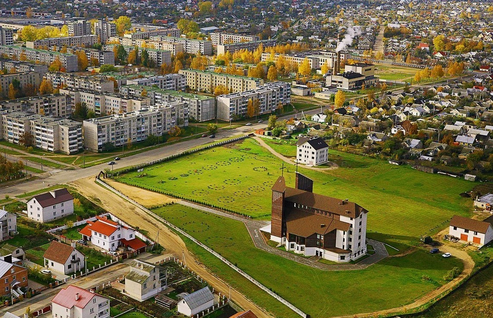

Открой Барановичи заново
Бесплатный цифровой путеводитель по скрытым дворам, историческим улочкам и знаковым местам города. Исследуйте в своём темпе, следуйте по интерактивной карте и собирайте отметки о посещении, как в настоящем квесте.
Как пользоваться путеводителем
1. Откройте карту
Сохраните ссылку на маршрут или скачайте GPX-трек в приложение на телефоне. Все описания и фото доступны даже без интернета.
2. Следуйте по точкам
Идите по маршруту в своем темпе. На каждой точке вас ждет подробная история места, старые фотографии и интересные факты.
3. Собирайте отметки
Отмечайте посещенные точки и проходите маршруты как квест. Делитесь достижениями с друзьями и открывайте новые уголки города!
Идея и цели проекта
Сайт «Барановичи.Маршруты» создан местными жителями с огромной любовью к родному городу. Наша главная цель – не просто показать туристам парадный фасад, а раскрыть настоящую душу Барановичей: его скрытые дворики, исторические улочки и забытые страницы прошлого.
Мы стремимся к популяризации города, сохранению местной истории и культурного наследия, а также к созданию активного сообщества жителей-краеведов. Этот бесплатный инструмент для самостоятельных прогулок поможет вам узнать Барановичи таким, каким его знают только местные. Присоединяйтесь к нам, исследуйте город в своём темпе и помогайте сохранять его историю для будущих поколений!
Маршрут для первого знакомства

«Паровозная столица»
Путь следования:
- Железнодорожный вокзал (памятник архитектуры XIX века)
- Памятник паровозу Эш-4258
- Свято-Покровский собор
- Здание бывшего реального училища
- Прогулка по улице Советской
- Парк имени Жилибока
Этот маршрут проведёт вас по местам, которые не показывают обычным туристам. Вы увидите старинную купеческую застройку, узнаете истории местных жителей, найдёте лучшие виды на город и сделаете отличные фотографии.
Открыть карту и описание →Стань автором маршрута
Конструктор маршрутов уже доступен каждому! Мы верим, что лучшие знания о городе хранятся в сердцах его жителей. Добавьте свои любимые места, скрытые дворики или исторические здания на общую карту и помогите другим увидеть Барановичи вашими глазами.
Добавляйте точки
Отмечайте интересные локации на интерактивной карте, загружайте фотографии и пишите уникальные описания.
Создавайте путь
Выстраивайте логичный порядок посещения, задавайте время прохождения и сложность маршрута.
Делитесь с сообществом
Публикуйте свои экскурсии, получайте отзывы от прохожих и становитесь признанным краеведом.

Присоединяйтесь к инициативе по сохранению местной истории. Каждый ваш маршрут — это вклад в культурное наследие Барановичей.